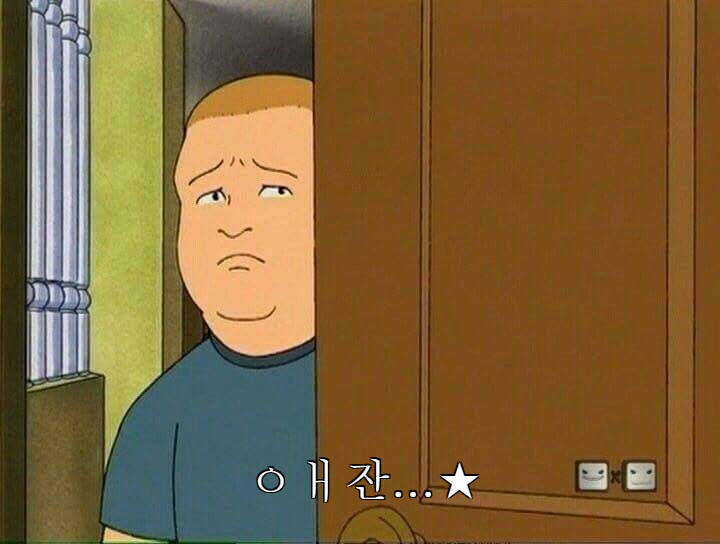
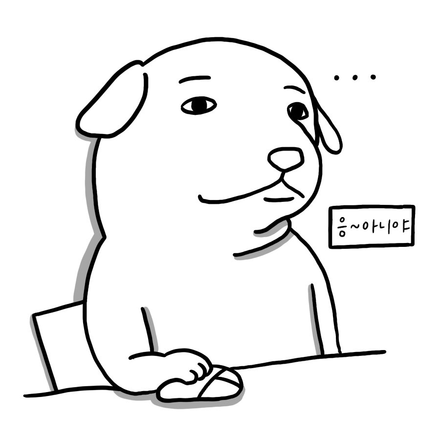

드디어. 드디어.. 안끝날것 같았던 편입 입시가 끝이 났다!
이제 다시 대학생이다.
입시가 끝나면 하고 싶었던게 정말 많았던 것 같은데 막상 끝나고나니까 아무것도 안하고 싶어졌다.
그래서 정말 아무것도 안했는데 눈떠보니 개강...
여러번 가본 부산이지만 오랜만에 가는 여행이라 이번엔 조금 특별하게(무모하게) 무궁화호를 타고 가기로 했다.
서울역에서 저녁 11시에 출발하는 무궁화호 마지막 열차였고 새벽4시가 조금 넘어 부산역에 도착했다.
새벽 4시 부산역은 모든 가게에 불이 꺼져있었지만 첫차시간까지 기다려야했기 때문에 근처에 24시 pc방에 들어갔는데 신분증 검사를 하셨다.
나는 무사히 통과되었는데 같이간 친구 한명의 신분증 사진이 문제였다.
고등학교때 얼굴과 지금얼굴이 많이 달라지긴 했지만 주인 아저씨는 절대 믿어주지 않으셨다 ㅠㅠ 학생증을 보여드렸는데도 안된다고 하셔서 거의 쫒겨나다시피 다시 밖으로 나왔다.
그래도 아직까진 어려보여서 그렇다나 뭐라나..
